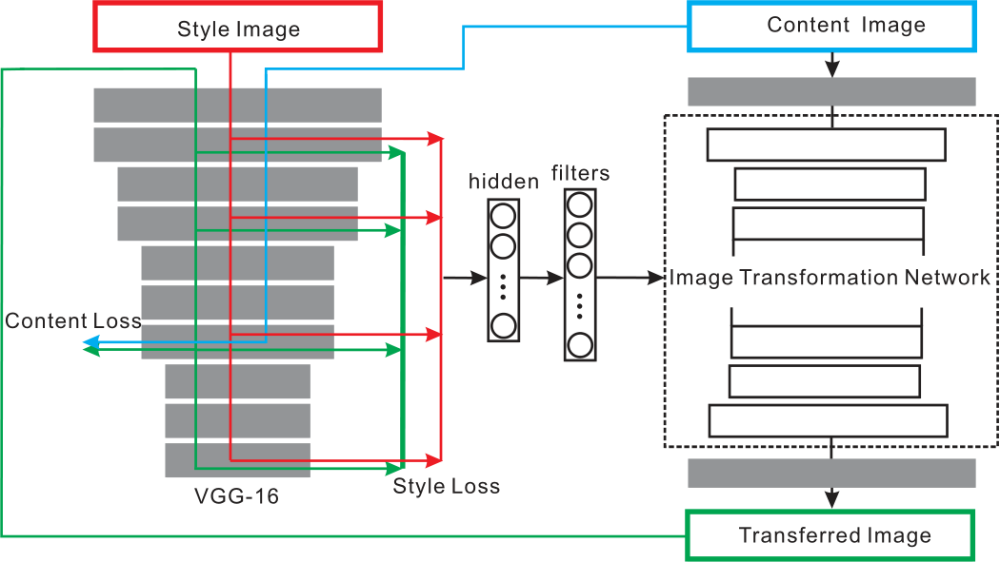
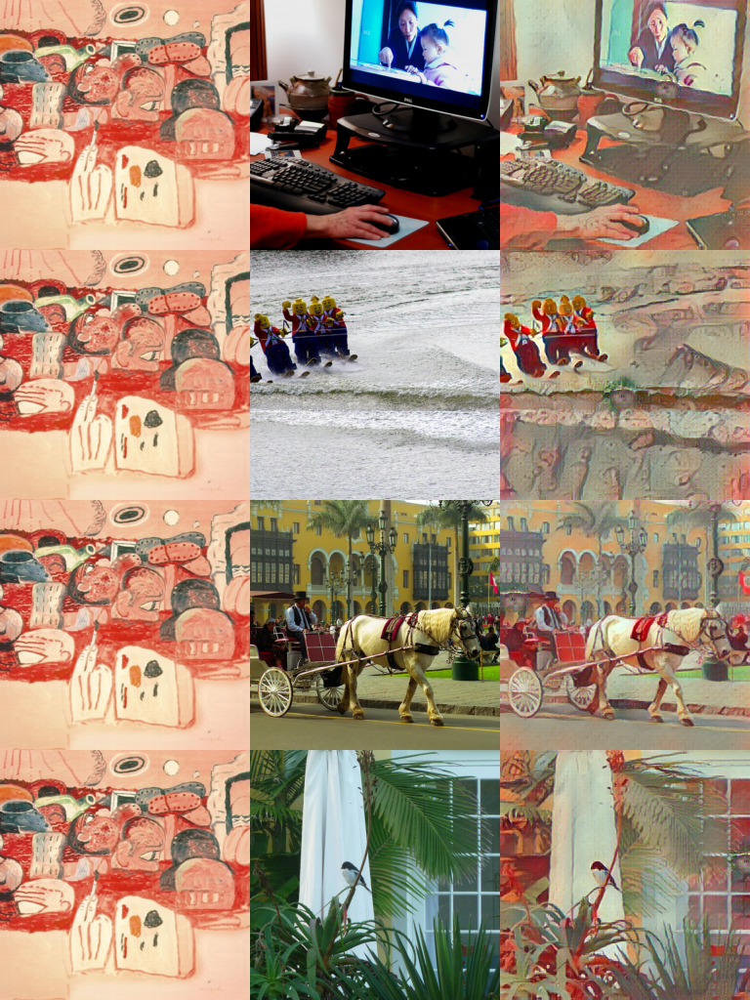
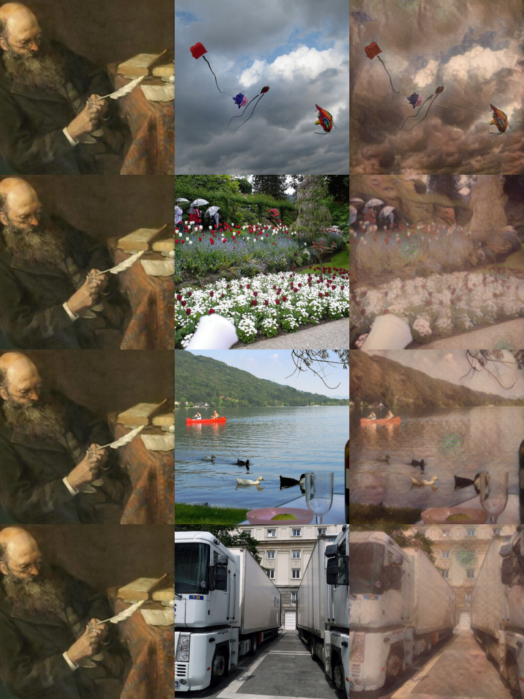

Meta Networks
Meta Networks for Neural Style Transfer
Shen F , Yan S , Zeng G .Meta Networks for Neural Style Transfer[J]. 2017.DOI:10.48550/arXiv.1709.04111.
In this paper we propose a new method to get the specified network parameters through one time feed-forward propagation of the meta networks and explore the application to neural style transfer. Recent works on style transfer typically need to train image transformation networks for every new style, and the style is encoded in the network parameters by enormous iterations of stochastic gradient descent. To tackle these issues, we build a meta network which takes in the style image and produces a corresponding image transformations network directly. Compared with optimization-based methods for every style, our meta networks can handle an arbitrary new style within 19 ms seconds on one modern GPU card. The fast image transformation network generated by our meta network is only 449KB, which is capable of real-time executing on a mobile device. We also investigate the manifold of the style transfer networks by operating the hidden features from meta networks. Experiments have well validated the effectiveness of our method. Code and trained models has been released https://github.com/FalongShen/styletransfer.
摘要：在本文中，我们提出了一种通过元网络的一次性前馈传播获得指定网络参数的新方法，并探讨了该方法在神经风格迁移中的应用。目前的风格迁移研究通常需要针对每一种新风格训练图像变换网络，并且通过大量的随机梯度下降迭代将风格编码到网络参数中。为了解决这些问题，我们构建了一个元网络，该网络接收风格图像并直接产生相应的图像转换网络。与针对每种风格的基于优化的方法相比，我们的元网络可以在一张现代 GPU 卡上花费 19 毫秒内处理任意新风格。我们的元网络生成的快速图像变换网络只有 449KB，能够在移动设备上实时执行。我们还通过操作元网络中的隐藏特征来研究风格转换网络的多样性。实验验证了该方法的有效性。代码和训练过的模型发布在：https://github.com/FalongShen/styletransfer%E3%80%82
文章贡献如下：
- 提供一个元网络来生成特定的网络，从而解决网络生成任务。元网络在一次前馈传播中接受新风格图像并生成对应图像的图像变换网络。
- 为风格迁移提供更显式的表示，使得纹理合成和纹理生成更自然。
- 与基于 SGD 的方法相比，元网络生成的网络在性能相似的情况下，速度提高了几个数量级。
- 为神经风格迁移算法提供了一个新的视角，这表明卷积神经网络可以应用于优化问题。
超网络和元网络
超网络：一种为大型网络生成权值的小网络，生成过程相对静态。
- HyperNEAT（Stanley， D’Ambrosio, and Gauci 2009）采用一组虚拟坐标来产生权重。
- Ha 等人（Ha, Dai, and Le 2016）提出使用静态超网络为卷积神经网络生成权重，并使用动态超网络为循环网络生成权重，他们将超网络作为宽松的权重共享形式。
元网络：一种利用神经网络来生成其他网络参数的技术，生成目标网络方面更为全面和灵活。
- Munkhdalai等人（Munkhdalai and Yu 2017）提出了一种通过快速参数化实现一次性分类的元网络，用于快速泛化。
元网络的工作（Mitchell, Thrun, and others 1993; Vilalta and Drissi 2002）采用了两级学习，分别是 跨任务执行的元级（meta-level）模型的缓慢学习 和 在每个任务内执行的基本级（base-level）模型的快速学习。
论文通过三个逐步递进的 Situation 构建元网络的数学基础，核心目标是从传统优化问题过渡到动态网络生成。令 $f(x)$ 和 $h(x)$ 为固定可微函数，$\vert\vert \cdot \vert\vert$ 为正则化。考虑优化问题：
$$ \vert\vert f(x) - f(a) \vert\vert + \lambda\vert\vert h(x)-h(b) \vert\vert\tag{1} $$有三种情况，取决于 $a$ 和 $b$ 是固定的还是可变的。
Situation 1: 固定 $a$ 和 $b$
如果 $f(x)$ 和 $h(x)$ 是凸函数，式 (1) 是一个典型的关于 $x$ 的凸优化问题，我们可以直接用梯度下降法求出最优的 $x$。
$$ \arg\min_x \vert\vert f(x) - f(a_0) \vert\vert + \lambda\vert\vert h(x)-h(b_0) \vert\vert\tag{2} $$该情况下，定义为输入固定的内容 $a=a_0$ 和固定的风格图像 $b=b_0$。通过优化生成图像 $x$。上式中，$f(x)$ 表示内容感知函数，$h(x)$ 表示风格感知函数。
- 解决办法是通过梯度下降直接优化生成图像 $x$。
Situation 2: $a$ 可变，$b$ 固定
对于任意给定的 $a$，根据情况 1，存在一个对应的 $x$ 满足这个函数。也就是说，总是存在一个映射函数：
$$ \mathcal{N}: a \vert\rightarrow x\tag{3} $$将映射函数表示为深度神经网络 $\mathcal{N}(a;w)$，由 $w$ 参数化。现在考虑经验风险最小化（ERM）问题来寻找最优映射函数：
$$ \arg\min_w \sum_a \vert\vert f(x) - f(a) \vert\vert + \lambda\vert\vert h(x) - h(b_0) \vert\vert\tag{4} $$其中，$x=\mathcal{N}(a;w)$。然而，这种情况下难以优化 $\mathcal{N}(\cdot;w)$。函数 $f(\cdot)$ 对于决定 SGD 是否可以逼近最优映射函数也很重要。
该情况下，定义为输入可变的内容 $a$ 和固定的风格图像 $b=b_0$。希望找到一个映射函数 $\mathcal{N}(a;w)$，直接生成风格化图像 $x=\mathcal{N}(a;w)$，最小化所有内容图像的期望损失。
- 解决办法是训练一个 CNN（$\mathcal{N}(a;w)$），参数 $w$ 通过 SGD 优化，学习内容图像到风格化图像的映射。
- 将优化变量从图像 $x$ 转换为网络参数 $w$；网络 $\mathcal{N}$ 隐含编码了风格信息，但仅适用于单一固定风格。
Situation 3: $a$ 和 $b$ 都可变
对于任意给定的 $b$，根据情况 2，存在一个映射函数，使得在给定 $a$ 的情况下找到接近最优的 $x$。假设这个最优映射函数由 $\mathcal{N}(\cdot;w)$ 中的 $w$ 参数化，可以通过 SGD 处理。在这种情况下，映射函数：
$$ meta\mathcal{N}: b\vert\rightarrow \mathcal{N}(\cdot;w)\tag{5} $$与情况 2 类似，再次将此映射函数表示为由 $\theta$ 参数化的深度神经网络 $meta\mathcal{N}(b;\theta)$。该网络将 $b$ 作为输入，产生一个近似式 (2) 的最优网络。与 SGD 的迭代求解不同，元网络只需要一个前馈传播来找到接近最优的网络。
为了优化网络中的 $\theta$，考虑以下经验风险最小化（ERM）问题：
$$ \arg\min_\theta \sum_b\sum_a \vert\vert f(x) - f(a) \vert\vert + \lambda\vert\vert h(x) - h(b) \vert\vert\tag{6} $$其中，$x=\mathcal{N}(a;w)$，$w=meta\mathcal{N}(b;\theta)$。对于每一个给定的 $b$，都存在一个最优的 $w$，因此训练阶段需要 SGD 的迭代来更新元网络参数 $\theta$，以此为每个给定的 $b$ 产生一个合适的 $w$。
该情况下，定义为输入可变的内容 $a$ 和可变的风格图像 $b$。构建元网络 $meta\mathcal{N}(b;\theta)$，输入风格图像 $b$，生成对应的图像转换网络参数 $w$。
- 解决办法是通过预训练模型提取风格图像 $b$ 的特征，再使用全连接层将风格特征映射为图像转换网络的参数 $w$。训练上使用大量风格和内容图像联合优化元网络的参数 $\theta$，使其泛化能力强。
- 将优化变量从网络参数 $w$ 转换为元网络参数 $\theta$，实现从风格到网络参数的端到端映射。本质上，元网络 $Meta\mathcal{N}$ 是一个高阶函数，学习如何生成适应不同风格的低阶函数（图像转换网络）。
风格迁移
固定内容图像的固定风格迁移
对于给定图像对 $I_s$ 和 $I_c$，目标是找到一个将 $I_s$ 的风格和 $I_c$ 的内容结合后感知损失函数最小的最优图像 $I$：
$$ \min_I\left( \lambda_c \vert\vert \mathbf{CP}(I;w_f) - \mathbf{CP}(I_c;w_f) \vert\vert _2^2 + \lambda_s \vert\vert \mathbf{SP}(I;w_f) - \mathbf{SP}(I_s;w_f) \vert\vert _2^2 \tag{7} \right) $$其中，
- $\mathbf{SP}(\cdot;w_f)$ 和 $\mathbf{CP}(\cdot;w_f)$ 是基于预训练深度神经网络的感知函数，由固定权重 $w_f$ 参数化，分别代表风格感知器和内容感知器。
- $\lambda_s$ 和 $\lambda_c$ 控制风格和内容的权重。
根据情况 1，将梯度下降应用于整个网络，并利用反向传播的梯度信息合成图像，最小化损失函数。这种方法为任何给定的风格图像生成高质量的结果，但需要数百次优化迭代来获得每个样本的收敛结果，这带来了很大的计算负担。
任意内容图像的固定风格迁移
这个阶段的图像变换网络基于大型自然图像数据集，通过反向传播利用参数的梯度上进行优化:
$$ \min_w\sum_{I_c}\left( \lambda_c \vert\vert \mathbf{CP}(I_w;w_f) - \mathbf{CP}(I_c;w_f) \vert\vert _2^2 + \lambda_s \vert\vert \mathbf{SP}(I_w;w_f) - \mathbf{SP}(I_s;w_f) \vert\vert _2^2 \tag{8} \right) $$其中，$I_w=\mathcal{N}(I_c;w)$，$\mathcal{N}$ 是由 $w$ 参数化的图像变换网络。
$I_s$ 的风格编码在 $w$ 中。对于一个新的内容图像，只需要通过变换网络进行前向传播来生成对应的图像。
固定内容图像的任意风格迁移
如前所述情况 2，对于某些特定条件，存在一个由 CNN 参数化的直接映射来逼近损失的近最优解。
考虑对称性问题，对于固定内容图像，尝试找到每个样式图像的转移图像：
$$ \min_w\sum_{I_s}\left( \lambda_c \vert\vert \mathbf{CP}(I_w;w_f) - \mathbf{CP}(I_c;w_f) \vert\vert _2^2 + \lambda_s \vert\vert \mathbf{SP}(I_w;w_f) - \mathbf{SP}(I_s;w_f) \vert\vert _2^2 \tag{9} \right) $$其中，$I_w=\mathcal{N}(I_c;w)$。
但是，已经发现它无法找到正确的映射。图像变换网络只给出样式图像作为传输图像，这表明直接映射来接近梯度下降解并不是那么简单。
任意内容图像的任意风格迁移
如情况 3 所示，通过下式得到转换网络 $\mathcal{N}(\cdot;w)$：
$$ Meta\mathcal{N}: I_s\vert\rightarrow \mathcal{N}(I_s;w)\tag{10} $$元网络由 $\theta$ 参数化，且通过内容图像数据集和风格图像数据集进行优化：
$$ \min_{\theta}\sum_{I_c,I_s}\left( \lambda_c \vert\vert \mathbf{CP}(I_{w_\theta};w_f) - \mathbf{CP}(I_c;w_f) \vert\vert ^2_2 + \lambda_s \vert\vert \mathbf{SP}(I_{w_\theta};w_f) - \mathbf{SP}(I_s;w_f) \vert\vert ^2_2 \right)\tag{11} $$其中，$I_{w_{\theta}}=\mathcal{N}(I_c;w_{\theta})$，$w_{\theta}=Meta\mathcal{N}(I_s;\theta)$。
风格图像 $I_s$ 作为损失函数中的监督目标，同时作为元网络的输入特征。
- 即元网络以风格图像为输入，生成一个能够将内容图像向风格图像传递的网络。
网络结构
图像转换网络结构
论文中的表 2：
| 网络层 | 输出形状 | 备注 |
|---|---|---|
| 输入层 | 3 × 256 × 256 | |
| 反射填充层 (40 × 40) | 3 × 336 × 336 | |
| 8 × 9 × 9 conv，stride 1 | 8 × 336 × 336 | 与 MetaNet 一同训练，在推理阶段是固定的 |
| 16 × 3 × 3 conv，stride 2 | 16 × 168 × 168 | 在推理阶段由元网络生成 |
| 32 × 3 × 3 conv，stride 2 | 32 × 84 × 84 | 在推理阶段由元网络生成 |
| 残差块，32 个卷积核 | 32 × 80 × 80 | 在推理阶段由元网络生成 |
| 残差块，32 个卷积核 | 32 × 76 × 76 | 在推理阶段由元网络生成 |
| 残差块，32 个卷积核 | 32 × 72 × 72 | 在推理阶段由元网络生成 |
| 残差块，32 个卷积核 | 32 × 68 × 68 | 在推理阶段由元网络生成 |
| 残差块，32 个卷积核 | 32 × 64 × 64 | 在推理阶段由元网络生成 |
| 16 × 3 × 3 conv，stride 2 | 16 × 128 × 128 | 在推理阶段由元网络生成 |
| 8 × 3 × 3 conv，stride 2 | 8 × 256 × 256 | 在推理阶段由元网络生成 |
| 3 × 9 × 9 conv，stride 1 | 3 × 256 × 256 | 与 MetaNet 一同训练，在推理阶段是固定的 |
除了第一个和最后一个之外，每个 conv 层后面都有一个实例 batchnorm 层和一个 relu 层，为清楚起见，表中省略了这些层。
整体模型结构
网络结构如下：

特征提取与损失计算
风格图像输入到预训练的 VGG16 模型中，提取出高层次风格特征，计算均值和标准差，拼接成风格特征向量。
对于内容损失计算：输入内容图像，取 VGG16 的 relu3_3 层的特征图作为内容特征，计算生成图像与内容图像在该层特征图的距离。
对于风格损失计算：输入风格图像，取 VGG16 的 relu1_2、relu2_2、relu3_3、relu4_3 层的输出作为风格特征，计算风格损失。
参数生成（全连接层）
- 风格特征通过两个全连接层，将高维的风格特征映射到生成图像转换网络（TransformNet）所需的各个卷积层滤波器参数上。
- 每个卷积层的参数由独立的 128 维子向量生成，按照上述图像转换网络，生成的卷积层有 14 层，故总隐藏向量维度为 $14 \times 128 = 1792$。
图像转换网络
依次为：反射填充、下采样卷积、残差块、上采样转置卷积。详见 图像转换网络。
训练策略
神经风格迁移的元网络小批量随机梯度下降训练。在实验中使用 $k = 20$ 和 $m = 8$。
- for epoch of epochs do
- 取样风格图像 $I_s$。
- for k steps do
- 对元网络进行前馈传播，得到变换网络：$w \leftarrow meta\mathcal{N}(I_s;\theta)$。
- 小批次取样 $m$ 个内容输入图像 $\{I_c^{(1)}, ..., I_c^{(m)}\}$。
- 对变换网络进行前馈传播，得到变换后的图像。
- 按式 (12) 计算内容损失和样式损失以及更新 $\theta$
- end for
- end for
结合代码分析网络结构
Reference: https://ypw.io/style-transfer/
卷积块构建 ConvLayer
构建包含反射填充、卷积、实例归一化和 ReLU 的卷积块。
用于区分权值是可训练的参数还是由 MetaNet 生成的参数。
def ConvLayer(in_channels, out_channels, kernel_size=3, stride=1,
upsample=None, instance_norm=True, relu=True,
trainable=False):
layers = []
if upsample:
layers.append(nn.Upsample(mode='nearest', scale_factor=upsample))
layers.append(nn.ReflectionPad2d(kernel_size // 2)) # 填充以保持空间维度
if trainable:
layers.append(nn.Conv2d(
in_channels, out_channels, kernel_size, stride))
else:
layers.append(MyConv2D(
in_channels, out_channels, kernel_size, stride))
if instance_norm:
layers.append(nn.InstanceNorm2d(out_channels))
if relu:
layers.append(nn.ReLU(inplace=True))
return layers
trainable参数决定使用nn.Conv2d（可训练）或MyConv2D（参数由 MetaNet 生成）。- 上采样采用最近邻插值。
自定义卷积层 MyConv2D
将传统卷积层的权重替换为外部生成的参数，实现动态风格适配。
- 权重和偏置初始化为零，固定不可训练。用于 TransformNet 中，其参数由 MetaNet 动态生成。
class MyConv2D(nn.Module):
def __init__(self, in_channels, out_channels, kernel_size=3, stride=1):
super(MyConv2D, self).__init__()
self.weight = torch.zeros(
out_channels, in_channels, kernel_size, kernel_size
).to(config["device"])
self.bias = torch.zeros(out_channels).to(config["device"])
self.in_channels = in_channels
self.out_channels = out_channels
self.kernel_size = (kernel_size, kernel_size)
self.stride = (stride, stride)
def forward(self, x):
return F.conv2d(x, self.weight, self.bias, self.stride)
def extra_repr(self):
s = ('{in_channels}, {out_channels}, kernel_size={kernel_size}'
', stride={stride}')
return s.format(**self.__dict__)
- 当设置
trainable=False时，使用MyConv2D。
图像转换网络 TransformNet
class TransformNet(nn.Module):
def __init__(self, base=8):
super(TransformNet, self).__init__()
self.base = base
self.weights = []
self.downsampling = nn.Sequential(
*ConvLayer(3, base, kernel_size=9, trainable=True),
*ConvLayer(base, base * 2, kernel_size=3, stride=2),
*ConvLayer(base * 2, base * 4, kernel_size=3, stride=2)
)
self.residuals = nn.Sequential(*[ResidualBlock(base*4) for _ in range(5)])
self.upsampling = nn.Sequential(
*ConvLayer(base * 4, base * 2, kernel_size=3, upsample=2),
*ConvLayer(base * 2, base, kernel_size=3, upsample=2),
*ConvLayer(base, 3, kernel_size=9, instance_norm=False, relu=False, trainable=True)
)
self.get_param_dict()
def forward(self, x):
y = self.downsampling(x)
y = self.residuals(y)
y = self.upsampling(y)
return y
- 结构：
下采样 → 残差块 → 上采样
def get_param_dict(self):
param_dict = defaultdict(int)
def dfs(module, name):
for _name, layer in module.named_children():
dfs(layer, '%s.%s' % (name, _name) if name != '' else _name)
if isinstance(module, MyConv2D):
param_dict[name] += int(np.prod(module.weight.shape))
param_dict[name] += int(np.prod(module.bias.shape))
dfs(self, '')
return param_dict
- 深度优先搜索遍历网络，递归访问所有子模块：通过
module.named_children()遍历每一层。- 构建层级名称：例如，
downsampling.0表示self.downsampling中的第一个子模块。
- 构建层级名称：例如，
- 如果是需要生成的参数的层，计算权值数量，累加到字典中。
def set_my_attr(self, name, value):
target = self
for x in name.split('.'):
if x.isnumeric():
target = target.__getitem__(int(x))
else:
target = getattr(target, x)
n_weight = np.prod(target.weight.shape)
target.weight = value[:n_weight].view(target.weight.shape)
target.bias = value[n_weight:].view(target.bias.shape)
- 解析层级名称，如
residuals.0.conv1，表示第 1 个 残差块中的conv1层。 value表示元网络生成的参数向量。- 根据
target.weight.shape累乘计算权重参数数量，截取前n_weight部分为权重，剩余部分为偏置。
def set_weights(self, weights, i=0):
for name, param in weights.items():
self.set_my_attr(name, weights[name][i])
- 输入
weights：由元网络生成的参数字典，键为层名（如downsampling.0），值为参数张量。 - 遍历字典，对每个层名调用
set_my_attr，将参数填充到层。 i=0表示支持批量处理时的索引（默认取第 0 个样本的参数）。
对该网络进行 torchsummary 的 summary() 分析总结：
| 结构 | 层 | Shape |
|---|---|---|
| 下采样 1 | ReflectionPad2d-1 | [-1, 3, 264, 264] |
| Conv2d-2 | [-1, 32, 256, 256] | |
| InstanceNorm2d-3 | [-1, 32, 256, 256] | |
| ReLU-4 | [-1, 32, 256, 256] | |
| ...... | ||
| 残差块 1 | ReflectionPad2d-13 | [-1, 128, 66, 66] |
| MyConv2D-14 | [-1, 128, 64, 64] | |
| InstanceNorm2d-15 | [-1, 128, 64, 64] | |
| ReLU-16 | [-1, 128, 64, 64] | |
| ReflectionPad2d-17 | [-1, 128, 66, 66] | |
| MyConv2D-18 | [-1, 128, 64, 64] | |
| InstanceNorm2d-19 | [-1, 128, 64, 64] | |
| ...... | ||
| 上采样 1 | Upsample-53 | [-1, 128, 128, 128] |
| ReflectionPad2d-54 | [-1, 128, 130, 130] | |
| MyConv2D-55 | [-1, 64, 128, 128] | |
| InstanceNorm2d-56 | [-1, 64, 128, 128] | |
| ReLU-57 | [-1, 64, 128, 128] | |
| ...... | ||
原输出
----------------------------------------------------------------
Layer (type) Output Shape Param #
================================================================
ReflectionPad2d-1 [-1, 3, 264, 264] 0
Conv2d-2 [-1, 32, 256, 256] 7,808
InstanceNorm2d-3 [-1, 32, 256, 256] 0
ReLU-4 [-1, 32, 256, 256] 0
ReflectionPad2d-5 [-1, 32, 258, 258] 0
MyConv2D-6 [-1, 64, 128, 128] 18,496
InstanceNorm2d-7 [-1, 64, 128, 128] 0
ReLU-8 [-1, 64, 128, 128] 0
ReflectionPad2d-9 [-1, 64, 130, 130] 0
MyConv2D-10 [-1, 128, 64, 64] 73,856
InstanceNorm2d-11 [-1, 128, 64, 64] 0
ReLU-12 [-1, 128, 64, 64] 0
ReflectionPad2d-13 [-1, 128, 66, 66] 0
MyConv2D-14 [-1, 128, 64, 64] 147,584
InstanceNorm2d-15 [-1, 128, 64, 64] 0
ReLU-16 [-1, 128, 64, 64] 0
ReflectionPad2d-17 [-1, 128, 66, 66] 0
MyConv2D-18 [-1, 128, 64, 64] 147,584
InstanceNorm2d-19 [-1, 128, 64, 64] 0
ResidualBlock-20 [-1, 128, 64, 64] 0
ReflectionPad2d-21 [-1, 128, 66, 66] 0
MyConv2D-22 [-1, 128, 64, 64] 147,584
InstanceNorm2d-23 [-1, 128, 64, 64] 0
ReLU-24 [-1, 128, 64, 64] 0
ReflectionPad2d-25 [-1, 128, 66, 66] 0
MyConv2D-26 [-1, 128, 64, 64] 147,584
InstanceNorm2d-27 [-1, 128, 64, 64] 0
ResidualBlock-28 [-1, 128, 64, 64] 0
ReflectionPad2d-29 [-1, 128, 66, 66] 0
MyConv2D-30 [-1, 128, 64, 64] 147,584
InstanceNorm2d-31 [-1, 128, 64, 64] 0
ReLU-32 [-1, 128, 64, 64] 0
ReflectionPad2d-33 [-1, 128, 66, 66] 0
MyConv2D-34 [-1, 128, 64, 64] 147,584
InstanceNorm2d-35 [-1, 128, 64, 64] 0
ResidualBlock-36 [-1, 128, 64, 64] 0
ReflectionPad2d-37 [-1, 128, 66, 66] 0
MyConv2D-38 [-1, 128, 64, 64] 147,584
InstanceNorm2d-39 [-1, 128, 64, 64] 0
ReLU-40 [-1, 128, 64, 64] 0
ReflectionPad2d-41 [-1, 128, 66, 66] 0
MyConv2D-42 [-1, 128, 64, 64] 147,584
InstanceNorm2d-43 [-1, 128, 64, 64] 0
ResidualBlock-44 [-1, 128, 64, 64] 0
ReflectionPad2d-45 [-1, 128, 66, 66] 0
MyConv2D-46 [-1, 128, 64, 64] 147,584
InstanceNorm2d-47 [-1, 128, 64, 64] 0
ReLU-48 [-1, 128, 64, 64] 0
ReflectionPad2d-49 [-1, 128, 66, 66] 0
MyConv2D-50 [-1, 128, 64, 64] 147,584
InstanceNorm2d-51 [-1, 128, 64, 64] 0
ResidualBlock-52 [-1, 128, 64, 64] 0
Upsample-53 [-1, 128, 128, 128] 0
ReflectionPad2d-54 [-1, 128, 130, 130] 0
MyConv2D-55 [-1, 64, 128, 128] 73,792
InstanceNorm2d-56 [-1, 64, 128, 128] 0
ReLU-57 [-1, 64, 128, 128] 0
Upsample-58 [-1, 64, 256, 256] 0
ReflectionPad2d-59 [-1, 64, 258, 258] 0
MyConv2D-60 [-1, 32, 256, 256] 18,464
InstanceNorm2d-61 [-1, 32, 256, 256] 0
ReLU-62 [-1, 32, 256, 256] 0
ReflectionPad2d-63 [-1, 32, 264, 264] 0
Conv2d-64 [-1, 3, 256, 256] 7,779
================================================================
Total params: 1,676,035
Trainable params: 15,587
Non-trainable params: 1,660,448
----------------------------------------------------------------
Input size (MB): 0.75
Forward/backward pass size (MB): 460.16
Params size (MB): 6.39
Estimated Total Size (MB): 467.30
----------------------------------------------------------------
特征提取与 MetaNet 网络计算
风格图像经过 VGG16 输出的 relu1_2、relu2_2、relu3_3、relu4_3 四层特征尺寸很大。
- 假设图像为
(256, 256)，那么 VGG16 输出的尺寸分别为(64, 256, 256)、(128, 128, 128)、(256, 64, 64)、(512, 32, 32)。取其 Gram 矩阵，即(64, 64)、(128, 128)、(256, 256)、(512, 512)也是很大的。
假如使用 512 × 512 个特征去生成 147584 个权值（一个残差层），那么这层全连接层的权值就是 $512\times 512\times 147584 = 386888260096$，再假设权重类型为 float32，则仅是权值大小为 144GB，非常不现实。
考虑只计算每一个卷积核输出的内容均值和标准差。
- 这种情况下，特征变成 $(64 + 128 + 256 + 512) \times 2 = 1920$ 维，但是，通过计算将图像转换网络的所有权重求和再乘上特征 $1920\times (18496+73856+147584*10+73792+18464)=3188060160$，计算后大小也有 11.8GB，还是不现实。
论文中提到，计算风格图像和转移图像两个特征图的均值和标准差作为风格特征。
The dimension of hidden vector is 1792 without specification. The hidden features are connected with the filters of each conv layer of the network in a group manner to decrease the parameter size, which means a 128 dimensional hidden vector for each conv layer.
隐向量的维数为 1792。将隐藏特征分组连接到网络各 conv 层的滤波器中，减小参数大小，即每个 conv 层有一个 128 维的隐藏向量。
意思是全连接层使用 $14\times 128=1792$ 个神经元，分别对应 2 层下采样层、10 层残差层和 2 层上采样层。
def mean_std(features):
mean_std_features = []
for x in features:
batch, C, H, W = x.shape
x_flat = x.view(batch, C, -1)
mean = x_flat.mean(dim=-1)
std = torch.sqrt(x_flat.var(dim=-1) + 1e-5)
feature = torch.cat([mean, std], dim=1)
mean_std_features.append(feature)
return torch.cat(mean_std_features, dim=-1)
- 输入VGG16提取的多层特征，计算每层特征的均值和标准差，拼接为 1920 维向量。
- 捕捉风格图像的统计特征（类似 Gram 矩阵），用于风格损失计算。
MetaNet 网络代码：
class MetaNet(nn.Module):
def __init__(self, param_dict):
super(MetaNet, self).__init__()
self.param_num = len(param_dict)
self.hidden = nn.Linear(1920, 128 * self.param_num)
self.fc_dict = {}
for i, (name, params) in enumerate(param_dict.items()):
self.fc_dict[name] = i
setattr(self, 'fc{}'.format(i + 1), nn.Linear(128, params))
self.hidden = nn.Linear(1920, 128 * self.param_num)：对应风格图像通过 VGG-16 提取的多层特征均值和标准差拼接后的维度，为每个参数层分配一个 128 维的隐藏向量。self.fc_dict[name] = i：将参数层名称（如 "downsampling.0"）映射到索引i。setattr(...)：动态为每个参数层创建一个独立的线性层（fc1,fc2, ...），输入维度为 128，输出维度为该层所需的参数数量params（如某卷积层的权重+偏置总数）。
def forward(self, mean_std_features):
hidden = F.relu(self.hidden(mean_std_features))
filters = {}
for name, i in self.fc_dict.items():
fc = getattr(self, 'fc{}'.format(i + 1))
filters[name] = fc(hidden[:, i * 128 : (i + 1) * 128])
return filters
hidden = F.relu(self.hidden(mean_std_features))：根据风格图像的均值和标准差，计算隐藏向量，维度为[batch_size, 1920]，并引入激活函数。for循环遍历fc_dict生成参数。首先根据索引i获取对应的fc。然后从hidden输出中切分出该层对应的 128 维片段，接着将这 128 维向量输入线性层生成该层所需的参数，最后将参数按层名存入字典。
对该网络进行 print 分析总结：
| 结构 | 层 | [in, out] |
|---|---|---|
| 隐藏层 | hidden | [1920, 1792] |
| 映射至下采样层参数 | fc1 | [128, 18496] |
| fc2 | [128, 73856] | |
| 映射至残差块参数 | fc3 | [128, 147584] |
| fc4 | [128, 147584] | |
| fc5 | [128, 147584] | |
| fc6 | [128, 147584] | |
| fc7 | [128, 147584] | |
| fc8 | [128, 147584] | |
| fc9 | [128, 147584] | |
| fc10 | [128, 147584] | |
| fc11 | [128, 147584] | |
| fc12 | [128, 147584] | |
| 映射至上采样层参数 | fc13 | [128, 73792] |
| fc14 | [128, 18464] |
原输出
print(metanet)：
MetaNet(
(hidden): Linear(in_features=1920, out_features=1792, bias=True)
(fc1): Linear(in_features=128, out_features=18496, bias=True)
(fc2): Linear(in_features=128, out_features=73856, bias=True)
(fc3): Linear(in_features=128, out_features=147584, bias=True)
(fc4): Linear(in_features=128, out_features=147584, bias=True)
(fc5): Linear(in_features=128, out_features=147584, bias=True)
(fc6): Linear(in_features=128, out_features=147584, bias=True)
(fc7): Linear(in_features=128, out_features=147584, bias=True)
(fc8): Linear(in_features=128, out_features=147584, bias=True)
(fc9): Linear(in_features=128, out_features=147584, bias=True)
(fc10): Linear(in_features=128, out_features=147584, bias=True)
(fc11): Linear(in_features=128, out_features=147584, bias=True)
(fc12): Linear(in_features=128, out_features=147584, bias=True)
(fc13): Linear(in_features=128, out_features=73792, bias=True)
(fc14): Linear(in_features=128, out_features=18464, bias=True)
)
torchsummary.summary(metanet, (1920,)):
----------------------------------------------------------------
Layer (type) Output Shape Param #
================================================================
Linear-1 [-1, 1792] 3,442,432
Linear-2 [-1, 18496] 2,385,984
Linear-3 [-1, 73856] 9,527,424
Linear-4 [-1, 147584] 19,038,336
Linear-5 [-1, 147584] 19,038,336
Linear-6 [-1, 147584] 19,038,336
Linear-7 [-1, 147584] 19,038,336
Linear-8 [-1, 147584] 19,038,336
Linear-9 [-1, 147584] 19,038,336
Linear-10 [-1, 147584] 19,038,336
Linear-11 [-1, 147584] 19,038,336
Linear-12 [-1, 147584] 19,038,336
Linear-13 [-1, 147584] 19,038,336
Linear-14 [-1, 73792] 9,519,168
Linear-15 [-1, 18464] 2,381,856
================================================================
Total params: 217,640,224
Trainable params: 217,640,224
Non-trainable params: 0
----------------------------------------------------------------
Input size (MB): 0.01
Forward/backward pass size (MB): 12.68
Params size (MB): 830.23
Estimated Total Size (MB): 842.92
----------------------------------------------------------------
论文实验结果
文献中主要对比了以下四类神经风格迁移方法：
- Gatys 等人的梯度下降优化方法（2015）
- Johnson 等人的逐风格训练方法（2016）
- AdaIN（自适应实例归一化）方法（Huang & Belongie, 2017）
- 本文提出的元网络方法
对比指标与结果：
| 方法 | 编码时间 | 图像转换时间 | 模型大小 | 支持风格数 | 核心优势与限制 |
|---|---|---|---|---|---|
| Gatys (梯度下降) | N/A | 9.52s | N/A | ∞ (任意风格) | 灵活但速度极慢，无法实时应用 |
| Johnson (逐风格训练) | 4小时/风格 | 15ms | 7MB/风格 | 1 | 单风格快速生成，但需逐风格训练 |
| AdaIN (统计量对齐) | 27ms | 18ms | 25MB | ∞ | 支持多风格，但依赖VGG编码器，模型较大 |
| 元网络 | 19ms | 15ms | 449KB | ∞ | 快速生成任意风格，模型轻量化，无需重训练 |
代码 Demo 结果
复现代码：Github/01.ref_and_note/06.MetaNets
| 示例 1 | 示例 2 |
|---|---|
|  |  |